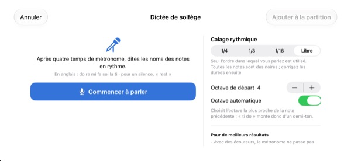
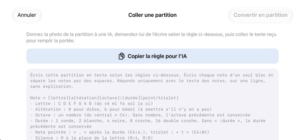

Arrêtez de compter dans votre tête.
Écoutez.
Recopiez sur la portée les deux mesures qui vous bloquent et lancez la lecture. Après une mesure de décompte, StaffSinger les joue au clic du métronome, avec le rythme et la hauteur exacts.
Toutes les fonctions sont gratuites. Pour iPhone et iPad.

Posez quelques notes et écoutez
Appuyez sur la portée sans relâcher, glissez vers le haut ou le bas pour changer la hauteur, puis relâchez pour poser la note. Lancez la lecture : une mesure de décompte, puis vos notes. Montez le volume, la page joue du son.
Encore perdu le compte au milieu de la mesure ?
Une croche pointée, puis une double croche, puis un triolet juste derrière, et le rythme tapé sur le genou s’effondre. Souvent, il n’y a pas de piano à portée de main non plus, comme la veille d’une répétition. Recopiez ces deux mesures dans StaffSinger : il les joue exactement comme elles sont écrites.
Le rythme et la hauteur exacts
Après une mesure de décompte, la musique se joue au clic du métronome et la note qui sonne s’allume en orange. Réglez le tempo de 40 à 200 BPM et choisissez 4/4, 3/4, 2/4, 6/8, 2/2 ou 3/8.
Empilez des notes sur le même temps et elles sonnent ensemble en accord ; vous pouvez écrire jusqu’à trois voix. Clés de sol, d’ut et de fa, armures : tout y est.

Chantez le nom des notes, elles s’écrivent
Après quatre clics de métronome, dites do re mi à voix haute, en rythme, et les notes se placent sur la portée. En parlant pile sur le temps, le rythme est aussi saisi, en noires, croches ou doubles croches. Dites rest pour un silence.
Les noms se prononcent en anglais : do re mi fa sol la ti, avec ti à la place de si. La reconnaissance vocale se fait sur votre appareil et rien n’est enregistré.

Confiez la photo à une IA, collez le résultat
Touchez Copier la règle pour l’IA, donnez-la à une IA avec une photo de votre partition, puis collez ce qu’elle écrit. La portée se remplit. Le format figure dans le tableau ci-dessous.
Vous pouvez aussi photographier la page imprimée et la garder à l’écran pendant que vous la recopiez à la main.

Trois étapes pour commencer
- 1
Choisissez les mesures difficiles
L’app s’ouvre sur une portée vide de deux mesures.
- 2
Écrivez les notes
Appuyez sur la portée ou jouez sur le clavier de piano.
- 3
Lancez la lecture
Un décompte, puis la lecture au métronome.
Format texte à coller
- C4:4
- do à l’octave 4, noire (le do central s’écrit C4)
- D:8
- Sans octave, la précédente est conservée
- F#4:8 · Bb4:4
- # pour dièse, b pour bémol
- E4
- Sans :durée, la durée précédente est conservée
- :1 · :2 · :4 · :8 · :16
- ronde, blanche, noire, croche, double croche
- C4:4.
- note pointée
- C4:8t
- triolet
- R:4 · R:8
- silences
Le bouton Copier la règle pour l’IA copie exactement ces consignes. Les lettres C D E F G A B correspondent à do ré mi fa sol la si. Séparez les notes par des espaces.
Tout est gratuit
Gratuit
- Saisie sur la portée et clavier de piano sur deux octaves
- Lecture avec décompte et métronome
- Accords et trois voix
- Armures et trois clés
- Dictée de solfège
- Collage de texte et photos de référence
Soutenir le développeur
- Laissez un petit pourboire depuis les Réglages
- Les pourboires ne débloquent rien de plus
Pas d’abonnement. Chaque pourboire est un paiement unique.
Sans publicité, sans compte.
Questions
Comment ajouter des notes ?
Choisissez d’abord une durée dans la barre d’outils, puis appuyez sur la portée à la hauteur voulue. Vous entendez la note tant que vous maintenez le doigt, et elle s’ajoute quand vous relâchez. Touchez le bouton clavier pour saisir les notes sur un piano de deux octaves.
Comment faire un accord ?
Activez le bouton Accord dans la barre d’outils et ajoutez des notes. Elles s’empilent sur la note sélectionnée et sonnent ensemble.
Comment corriger une note ?
Faites glisser une note vers le haut ou le bas pour changer sa hauteur, ou sur le côté pour la déplacer sur un autre temps. Quand une note est sélectionnée, les boutons ♯ et ♭ la déplacent d’un demi-ton et les boutons 8va d’une octave.
Où changer le tempo ou la mesure ?
Dans les Réglages, avec la clé et l’armure. Vous pouvez aussi y activer ou désactiver le métronome et le décompte.
Je n’entends rien.
Vérifiez le mode silencieux et le volume multimédia. S’il ne manque que le métronome, vérifiez dans les Réglages, sous Aides à la lecture, que le métronome est activé.
La dictée se trompe souvent de note.
Utilisez des écouteurs pour que le métronome ne passe pas dans le micro, et dites un nom de note bien net par temps. Si une note est fausse, faites-la glisser pour la corriger.
Pourquoi l’app a-t-elle besoin de l’appareil photo ?
Uniquement pour photographier votre partition et l’afficher à l’écran comme référence. Les photos ne quittent jamais votre appareil, et vous pouvez en choisir une dans votre photothèque sans autoriser l’appareil photo.
Sur quels appareils fonctionne-t-elle ?
iPhone et iPad sous iOS 17 ou version ultérieure. Elle est conçue pour le mode paysage.
Ma musique ou ma voix sont-elles envoyées quelque part ?
Non. Vos partitions, vos photos et votre voix restent sur votre appareil, et tout fonctionne hors ligne. Seules des statistiques d’utilisation anonymes et des rapports de plantage sont envoyés à iCloud, pour aider à corriger l’app.
Comment vous contacter ?
Écrivez à leeo@kakao.com. La réponse arrive généralement sous 2 à 3 jours ouvrés. Les signalements de bugs et les idées de fonctions sont aussi les bienvenus en issue sur GitHub, à l’adresse M1zz/StaffSinger.
Une question, une remarque ? Écrivez à leeo@kakao.com.